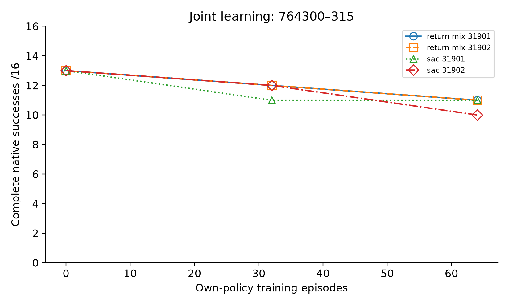
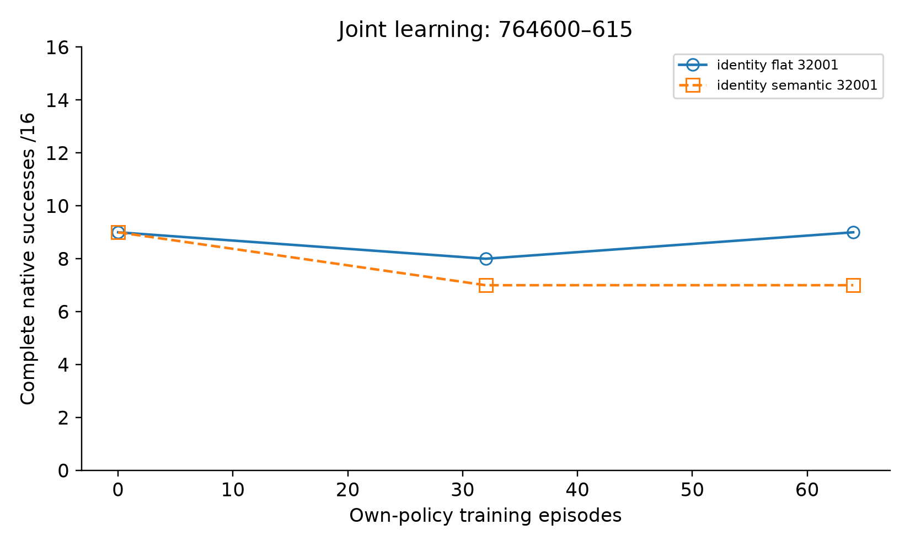
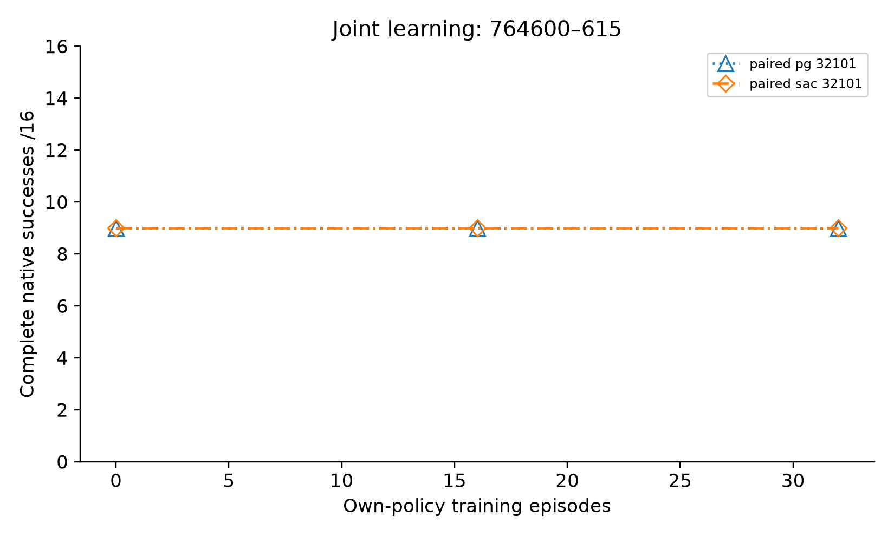
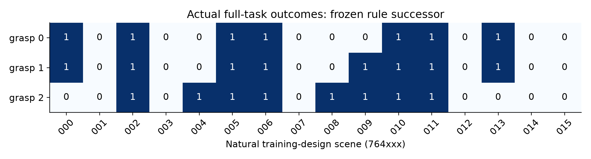
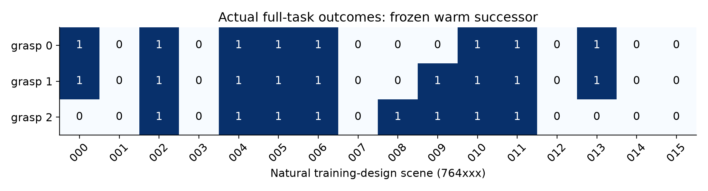
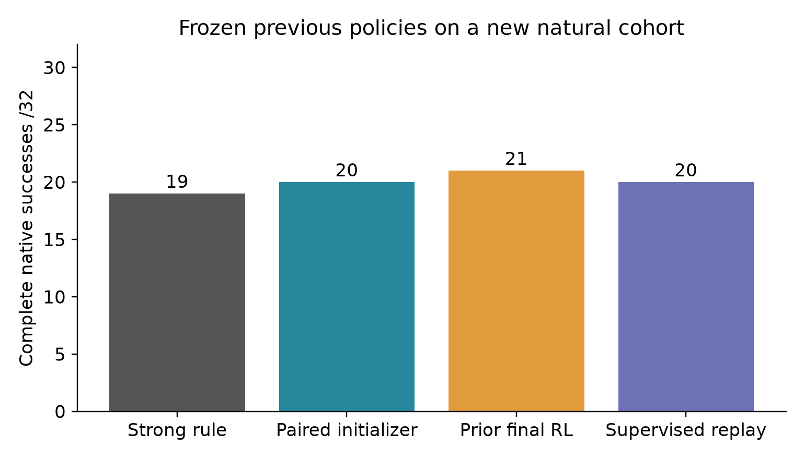

Native Peg100 · real simulated grasp · 448 own-policy training episodes · no independent method gain
Full evidence / limitations · Raw-derived results · Cost · Archives / SHA · Theory & prior art
| Arm | Own episodes | Initial → middle → final | |---|---:|---| | identity_flat_32001 | 64 | 9 → 8 → 9 /16 | | identity_semantic_32001 | 64 | 9 → 7 → 7 /16 | | paired_pg_32101 | 32 | 9 → 9 → 9 /16 | | paired_sac_32101 | 32 | 9 → 9 → 9 /16 | | return_mix_31901 | 64 | 13 → 12 → 11 /16 | | return_mix_31902 | 64 | 13 → 12 → 11 /16 | | sac_31901 | 64 | 13 → 11 → 11 /16 | | sac_31902 | 64 | 13 → 12 → 10 /16 |
Different cohorts across iterations; compare arms only within each panel. Fixed final models, no best-checkpoint selection.






Sampled training rescue, not deployed learned improvement. Native factorial follow-up shows either grasp change or rear correction alone succeeds; no joint necessity claim. Measured-state visualization only; full native source trajectories and SHA are in MANIFEST.json and RAW archives.
Complete RAW · Clickable synchronized curves · Frame/source manifest
Warm initializer succeeds; execution-shared critic final fails. Front and rear behaviors change together; no single-factor causal claim. Measured-state visualization only; full native source trajectories and SHA are in MANIFEST.json and RAW archives.
Complete RAW · Clickable synchronized curves · Frame/source manifest
No candidate beats matched ordinary learning and its warm start. Retain the strong baseline and joint runtime. Next isolate opportunity omitted by frozen proposal policies before further training. No sealed test, hardware operation, changed native criterion or transfer claim.